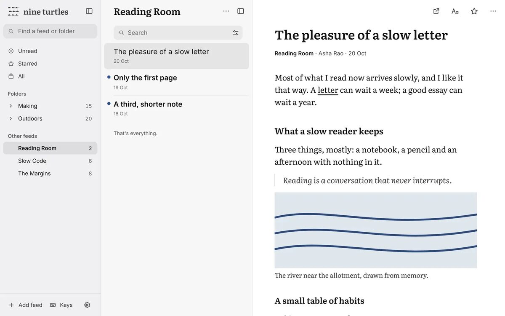
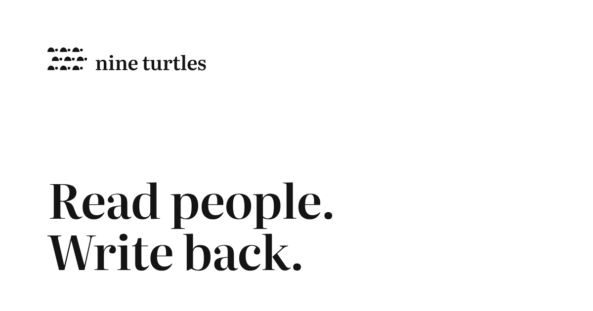
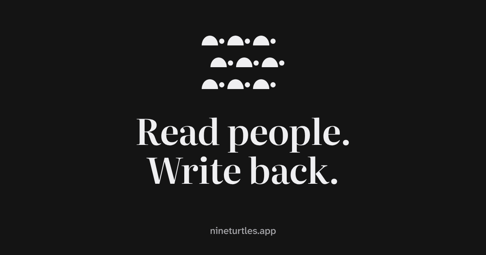

The last small parts of the brand: what an empty screen says, the "Wrong turn?" page, the emails, and the picture that shows when someone shares a link to nine turtles. For each one there's today's version, a safe option and a bold one, and I've marked my pick. The turtles on the 404 page stay exactly as they are. Click any picture to see it at full size.
Today an empty list is one plain line at the top, in the same small text as everything else, so it looks like something didn't load. Every option gives it one shape: a short fact in the reading serif, and, only when there's something to do, a smaller grey line saying how. No pictures.
My pick: the new shape, with three of the bold option's lines (the feed says when it was last checked, search says where it looked, and every "nothing yet" is said the same way).
| Place | Today | Safe (same words, new shape) | Bold (a true fact in each) | My pick |
|---|---|---|---|---|
| A feed | This feed has no articles yet. | This feed has no articles yet. | Nothing from this feed yet.Last checked today at 14:20. | Nothing from this feed yet.Last checked today at 14:20. |
| A folder | No articles in this folder yet. | No articles in this folder yet. | Nothing in this folder yet. | Nothing in this folder yet. |
| Unread | Nothing unread. | Nothing unread. | Nothing unread.Newest: Mira Okafor, yesterday at 18:05. | Nothing unread.(no second line: pointing at the next article from an empty screen is a small pull) |
| Starred | No starred articles yet. | No starred articles yet. | Nothing starred yet.Press the star on any article to keep it here. | Nothing starred yet.Press the star on any article to keep it here. |
| Recently read | Articles you open will show here. | Articles you open will show here.(the same in every option) | ||
| Up Next | Nothing in Up Next. Add an episode from its More menu. | Nothing in Up Next.Add an episode from its More menu.(the same words, split in two) | ||
| A collection | Nothing in this collection yet. Articles you put here stay, even after a year. Add one from an article's More menu. | Nothing in this collection yet.Articles you put here stay, even after a year. Add one from an article's More menu. | Nothing in this collection yet.Add an article from its More menu. Articles here stay, even after a year. | |
| Search | Nothing found. | Nothing found. | Nothing found for “walking” in Starred. | |
Today Unread ends with "You're all caught up.", but the design rules already say it should be "That's everything for now." ("caught up" sounds like a finish line). I'd fix that, and move the line onto the list's left edge in the serif, with room under it so the list clearly stops. Other lists keep "That's everything."
The welcome's heading, "A quiet place to read.", leans on "quiet", and the brand rules agreed on 1 November say "calm" and "quiet" aren't the brand, because every reader app says them. Those same rules already have a line for this moment: "Hello. Who would you like to read?" I'd use it as it is. The rest of the welcome stays.
The turtles and the words stay exactly as they are. What changes is the type and the spacing: today every gap is the same 40px, so nothing groups, and "404 ERROR" is the only all-capitals label in nine turtles. The new spacing pulls the turtles up to their label and gives the title room.
My pick: bold. Everything on one left edge, starting where the home page's headline starts, so the page looks like the website's sibling rather than an error template.
nine turtles sends four emails, all about your account: a sign-in link, a new-password link, confirming a new email address, and a note when your email changes. Today they're plain text, signed "nine turtles". The design rules say emails speak as you, Rohit, so the person should show at the end.
My pick: safe. Plain text, signed by you. These are keys to someone's account: plain text looks the same in every email app, shows the real link (the best defence against look-alike scam emails), and never breaks in dark mode.
One wording change too, in the "your email was changed" note. Today it ends "tell whoever runs this nine turtles"; it would become "Reply to this email and I'll help you get your account back." That needs replies to hello@nineturtles.app to reach you: do they?
When someone pastes nineturtles.app into a message, the app shows a picture. Today it's an old screenshot with the old logo and letters, the wrong shape (apps crop it), and at the small size a preview shows, an app screenshot turns into grey blur.
My pick: bold. A black tile in the app icon's two colors, with the nine turtles and the headline. No color, so it stays ink only, and it's the same object people later see on their home screen.

Today

Safe: white, on the home page's left edge

Bold, my pick: the black tile
Real size in a message, 300px wide. Some apps (WhatsApp, for one) crop to the middle square instead:
Safe loses the start of its words in a square; bold keeps everything.
A rule to write down, so nobody adds a turtle mascot later. The turtle is the logo's drawing and nothing else: it never acts, sleeps or celebrates.